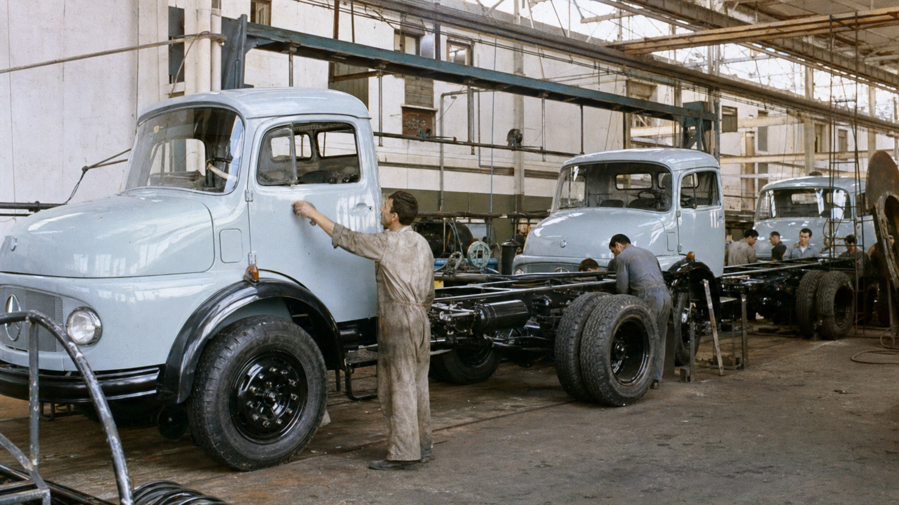
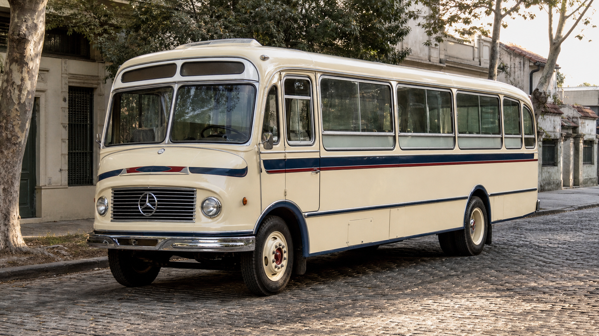

Hay vehículos que cumplen una función y otros que terminan representando una época. En la Argentina, el Mercedes-Benz 1114 pertenece al segundo grupo. Durante décadas llevó cereales, bebidas, materiales, hacienda y mercadería; trabajó como volcador, tractor, auxilio y doble tracción. Su plataforma también dio origen al colectivo LO 1114, una de las imágenes más reconocibles del transporte urbano nacional.
La fama hizo que el nombre “1114” se use de manera amplia, aunque no todos los vehículos de esa familia son iguales. El L 1114 fue el camión de carga; el LA 1114 incorporó tracción integral; el LO 1114 fue el chasis destinado a colectivos. Conocer esas diferencias es fundamental para contar bien su historia y también para identificar un repuesto.
Antes del 1114: Mercedes-Benz se afianza en la Argentina
Mercedes-Benz inició su actividad industrial argentina en 1951 y concentró progresivamente la producción en el complejo de La Matanza, conocido durante décadas por su vínculo con González Catán y Virrey del Pino. Allí se fabricaron camiones, motores y chasis para colectivos que acompañaron el crecimiento del transporte nacional.
En los años cincuenta, los L 311 y L 312 tuvieron un papel importante. A mediados de los sesenta apareció el L 1112, con una cabina semifrontal de trompa corta que aprovechaba mejor el largo total sin llevar al conductor completamente sobre el eje delantero. Esa arquitectura preparó el terreno para una evolución con más potencia y mayores posibilidades de carga: el L 1114.

1967: nace el Mercedes-Benz L 1114
La documentación histórica reunida por el Ministerio de Economía ubica el comienzo de la fabricación del L 1114 en septiembre de 1967. El nuevo camión llegó para responder a exigencias crecientes del transporte de cargas y combinó el motor diésel OM 352 de inyección directa con una caja sincronizada de cinco marchas.
Su aparición no fue una ruptura total con lo anterior. Conservó una configuración conocida por transportistas y talleres, pero elevó las prestaciones. Esa continuidad facilitó su adopción: ofrecía una herramienta más capaz sin abandonar una estructura mecánica que el mercado local podía comprender y atender.
El OM 352, corazón de la leyenda
El principal protagonista mecánico fue el Mercedes-Benz OM 352, un diésel atmosférico de seis cilindros en línea, 5.675 cm³ e inyección directa. Las fichas históricas citan 130 CV bajo norma DIN o alrededor de 145 HP bajo medición SAE. No son dos motores distintos: son valores expresados con normas diferentes.
La potencia máxima se declaraba a 2.800 rpm y el par rondaba los 37 kgm DIN a 2.000 rpm. Más allá de las cifras, su valor práctico estaba en una entrega adecuada para el trabajo, una construcción convencional y una presencia extendida en la red de servicio. Con el tiempo, el OM 352 también se convirtió en una referencia por derecho propio.
El conjunto se completaba con cajas manuales de cinco velocidades sincronizadas. Hubo diferencias de transmisión y relación final según la versión y el uso. Por eso, dos unidades identificadas popularmente como “1114” pueden requerir componentes distintos aunque compartan aspecto general y motor.
Un chasis preparado para muchos trabajos
Fuentes industriales de la época mencionan al L 1114 con diferencial simple y tres distancias entre ejes. Esa variedad permitía adaptar el chasis a cajas abiertas, furgones, volcadores, tanques, equipos de reparto y otras carrocerías. La capacidad de transformarse en una herramienta específica fue una de las claves de su difusión.
La cabina de trompa corta facilitaba el acceso al motor y conservaba una posición de conducción familiar. El bastidor de largueros y travesaños admitía numerosas configuraciones, siempre dentro de las especificaciones técnicas correspondientes. En el uso cotidiano, la combinación de chasis, elásticos, ejes y transmisión dio lugar a una enorme diversidad de unidades.
Eso explica por qué la historia del 1114 no puede reducirse a una única ficha técnica. A lo largo de los años existieron cambios, opcionales y aplicaciones especiales. Para restaurar o reparar uno, el año, el tipo de chasis, la distancia entre ejes y los números de identificación valen más que una descripción genérica.
La familia crece: L, LA, LK y LS
La denominación básica L 1114 corresponde al camión convencional de carga. Dentro de la familia también aparecieron variantes orientadas a tareas diferentes. Los registros históricos mencionan configuraciones LK vinculadas al trabajo volcador y LS destinadas al uso tractor, además de las versiones con distintas longitudes de chasis.
El LA 1114 llevó el concepto a terrenos difíciles mediante tracción en las cuatro ruedas. El documento industrial del Ministerio de Economía señala su lanzamiento en enero de 1970. Esa variante tuvo aplicaciones civiles y específicas donde la motricidad era más importante que la velocidad de ruta.
Estas letras no son un detalle decorativo. Indican familias de aplicación que pueden cambiar transmisión, cardanes, ejes, suspensión y otros componentes. Antes de pedir una pieza conviene confirmar la designación completa y evitar identificar el vehículo solamente como “Mercedes 1114”.
Del camión al colectivo LO 1114
En 1970 comenzó la producción del LO 1114, desarrollado sobre la base mecánica del camión para recibir carrocerías de colectivo. La letra O distingue su destino como ómnibus. Esta versión multiplicó la presencia del nombre 1114 en ciudades y pueblos, hasta convertirlo en parte de la memoria cotidiana de millones de pasajeros.
El chasis se ofreció con diferentes distancias entre ejes y fue vestido por numerosos carroceros argentinos. Esa combinación produjo colectivos muy distintos en apariencia, aunque compartieran la base Mercedes-Benz. Años después se sumaron mejoras como dirección asistida y opciones de transmisión y frenos para determinadas versiones.
Mercedes-Benz celebró en 2020 los cincuenta años del LO 1114 y difundió una producción cercana a las 30.000 unidades. Esa cifra corresponde al chasis de colectivo, no al total de camiones L 1114. Separar ambos datos evita uno de los errores más repetidos al narrar la historia del modelo.

Producción nacional y éxito comercial
Los registros disponibles muestran un crecimiento rápido. Una reconstrucción basada en el libro institucional de los 60 años de Mercedes-Benz Argentina señala 205 camiones durante el período incompleto de 1967, 958 en 1968 y un máximo anual de 4.035 unidades en 1974. Los anuarios de ADEFA también registran al 1114 como chasis con cabina dentro de la producción nacional.
Las cifras pueden variar entre fuentes según el período considerado y la forma de agrupar versiones. Lo que no ofrece dudas es su escala industrial: el 1114 fue fabricado durante muchos años, en múltiples configuraciones y con una presencia que alcanzó todo el país. Su historia está ligada tanto a la fábrica como a carroceros, transportistas, mecánicos y repuesteros.
Por qué se convirtió en un símbolo
Su prestigio no nació de una sola característica. El 1114 combinó una mecánica conocida, capacidad de adaptación y una red de usuarios que aprendió a mantenerlo. La disponibilidad de conocimientos y componentes prolongó la vida de muchas unidades, incluso cuando ya habían dejado de ser competitivas para ciertos trabajos modernos.
También fue un camión visible. Su trompa corta, la estrella en la parrilla y el sonido del seis cilindros formaron parte del paisaje de rutas, mercados y corralones. Cada región lo adoptó para tareas diferentes, de modo que el recuerdo del 1114 puede ser un cerealero, un reparto urbano, un volcador o un vehículo de auxilio.
Su vigencia cultural continuó en el mercado de usados. Un informe de búsquedas publicado en 2020 lo ubicó entre los camiones más consultados de la Argentina. Ese dato no mide el estado de cada unidad ni reemplaza una inspección, pero muestra cuánto reconocimiento conservó décadas después de su lanzamiento.
El 1114 en la actualidad
Todavía existen ejemplares trabajando, otros convertidos para usos especiales y muchos en proceso de restauración. Esa supervivencia es parte de su legado, pero no significa que todo 1114 esté en condiciones de circular o cumplir cualquier tarea. La antigüedad, las modificaciones acumuladas y el mantenimiento cambian por completo la realidad de cada vehículo.
Una restauración responsable debe respetar la identificación del chasis y evaluar profesionalmente frenos, dirección, suspensión, neumáticos, instalación eléctrica, combustible y estructura. La nostalgia no reemplaza la seguridad ni las exigencias legales vigentes. Preservar un clásico también implica usarlo dentro de sus condiciones reales.
Cómo identificar correctamente un repuesto
En una familia tan extensa, comprar únicamente por el nombre “1114” puede llevar a errores. Antes de cotizar, conviene reunir los siguientes datos:
- Modelo completo: L, LA, LK, LS o LO, junto con cualquier sufijo disponible.
- Año y número de chasis: ayudan a ubicar la etapa de producción.
- Motor: número e identificación, especialmente si fue reemplazado.
- Componente instalado: marca, código, medidas y fotografías legibles.
- Configuración: distancia entre ejes, tipo de diferencial y aplicación del vehículo cuando sea relevante.
Después de tantos años, algunas unidades mezclan piezas de distintas etapas o recibieron adaptaciones. La referencia que figura en el componente y la inspección del taller son más confiables que asumir originalidad por el aspecto exterior.
Preguntas frecuentes
¿El L 1114 y el LO 1114 son el mismo vehículo?
No. Comparten familia mecánica, pero el L fue concebido como camión de carga y el LO como chasis para colectivo. Carrocería, aplicación y diversos componentes cambian entre versiones.
¿Por qué aparecen 130 CV y 145 HP para el mismo motor?
Las fuentes históricas utilizan normas de medición diferentes: CV DIN y HP SAE. Por eso pueden mostrar cifras distintas para el OM 352 sin que se trate necesariamente de otra motorización.
¿Todos los 1114 usan los mismos repuestos?
No. El año, la variante, la caja, el diferencial, la distancia entre ejes y las modificaciones realizadas pueden cambiar la aplicación. Siempre hay que confirmar la pieza concreta.
¿Se puede seguir usando un 1114 para trabajar?
Depende del estado, la configuración, la tarea y la normativa aplicable. Requiere una evaluación técnica y documental individual; la fama de robustez del modelo no garantiza la condición de una unidad particular.
Un legado que sigue en marcha
El Mercedes-Benz L 1114 condensó una etapa central de la industria argentina. Fue producto nacional, herramienta de trabajo y origen de una familia que se extendió desde la ruta hasta el transporte urbano. Su importancia no reside solamente en cuánto produjo o transportó, sino en la red de personas y oficios que creció a su alrededor.
Más de medio siglo después de su lanzamiento, el 1114 sigue despertando respeto y conversación. Conocer su versión exacta, mantenerlo con criterio y conservar su historia es la mejor manera de valorar a uno de los camiones más recordados del país. Para consultar piezas disponibles, podés buscar en el catálogo de Zabala Repuestos y enviar la identificación completa de tu unidad.